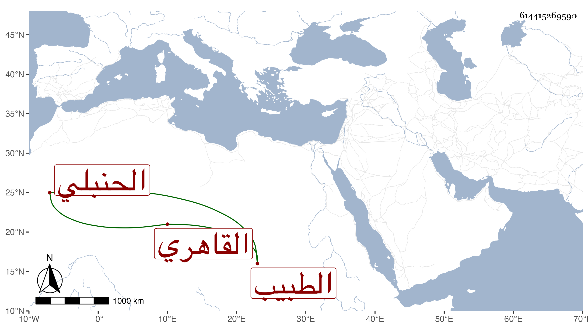

0902Sakhawi.DawLamic.ITO20230111-ara1.EIS1600.614415269590
Biography ID: 614415269590
495
محمد بن علي بن عبد الكافي بن علي بن عبد الواحد بن صغير الشمس أبو عبد الله بن العلاء أبي الحسن القاهري الحنبلي الطبيب والد الكمال محمد الآتي ويعرف كسلفه بابن صغير . ممن تميز في الطب وعالج وتدرب به جماعة بل له في الطب كتاب يسمى الزبد عرضه ابنه في جملة محافيظه على ابن جماعة وغيره في سنة ست عشرة وكان أحد الأطباء بالبيمارستان وبخدمة السلطان . ومات في سنة تسع وثلاثين عن أربع وثمانين فيما قاله لي ولده الآخر العلاء علي وقد وصفه العز بن جماعة في إجازة ولده بالشيخ القدوة العمدة الكامل الفاضل السالم المتقن المتفنن ، وأبو الفتح الباهي بالشيخ الإمام الرئيس البالغ من الكمالات النفسانية مبلغا لا يحد والحائز من الفضائل أنواعا لا تعد .
